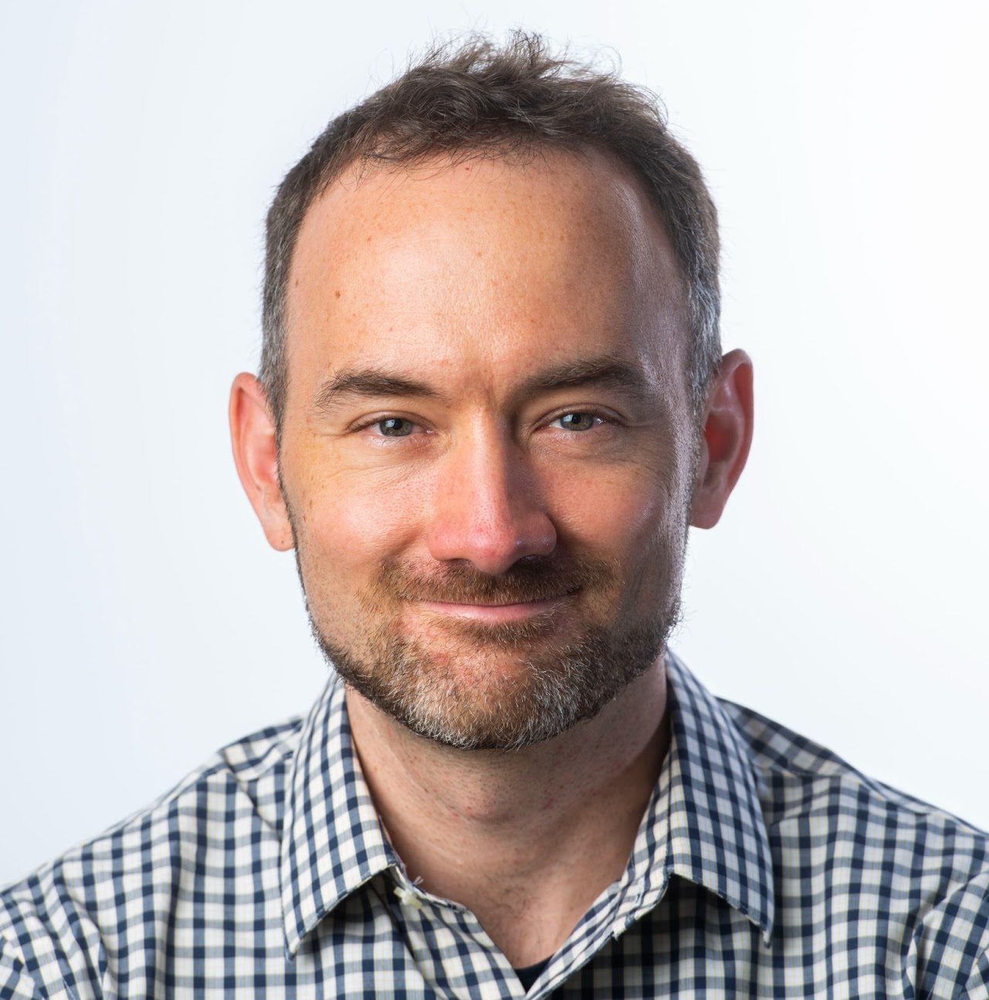

Graham Neubig
Associate Professor, Language Technologies Institute, Carnegie Mellon University
A prominent figure in machine learning and NLP, with extensive work on large language models, question answering, code generation, and evaluation. Academic leadership includes organizing workshops such as the ACL 2017 workshop on neural machine translation.
Expertise: LLMs, QA, code generation, multilingual processing, evaluation/interpretability; workshop organization.